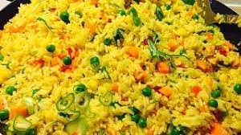

Fried Rice Recipes

Fried rice is a dish of cooked rice that has been stir-fried in a wok or a frying pan and is
usually mixed with other ingredients such as eggs, vegetables, seafood, or meat. It is often
eaten by itself or as an accompaniment to another dish.
ingredients
- Sesame oil
- Onion
- Peas & carrots
- Beaten eggs
- Rice
- Maggi
- Meat
- Time
- Green beans
Steps for making fried Rice
- Preheat a large skillet or wok to medium heat. Pour sesame oil in the bottom. ...
-
Slide the onion, peas and carrots to the side, and pour the beaten eggs onto the other side.
Using a spatula, scramble the eggs. ...
- Add the rice to the veggie and egg mixturePour the soy sauce on top.